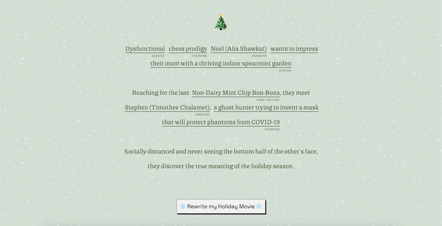

arielle bryn chapin
currently writing, working on data visualizations, and
sometimes even making videos.
formerly an iOS developer at
Instagram working on
camera modes
and at Facebook developing
insights
and
community features
for creators/fans.
latest from >playground
>playground is my new experimental spot for dataviz mini-stories. It's currently a work in progress, but soon enough I'd like to be updating regularly!

Holiday Movies for *These Times*
projects & personal work

delve: history videos
Created (researched, wrote, edited) a video about
"rainmakers" that tried to overcome nature at the turn of the
20th century
(and how their legacy has lived on). Making videos has been one
major focus of my current learning sabbatical, and more are in the
works! I've always loved history and storytelling and will get
sucked into hours of research about niche topics; now I'm using
those strengths to create and tell stories that others can learn
from.
skills: research, condensing large amounts of information into a
story, script writing, graphic and motion design, audio editing, and
lots of video editing (HitFilm Express currently; used Adobe
Premiere in the past)
zest
We created a spice kiosk that uses computer vision to recommend what
college students should add to their food. Ideated, iterated, and
built with a group for a design course.
primary role: front-end development, interface design
featured on:
core77
imprint
I designed and prototyped an interactive wall for my undergraduate
honors thesis. I ran experiments with my prototype, testing and
understanding the specifics of the physical-control interactions
through user trials. Presented at the 2017 Tangible and Embedded
Interaction Conference (Student Design section) in Yokohama, Japan.
mosaicJS
I created a
web layout framework
inspired by
Masonry
that allows web developers to add “tiles” to an auto-layout grid
while providing specific positions to important tiles.
see more at this page
other work
Placed 10th out of an original 7,600 writers in
NYC Midnight’s 2020 100-word Microfiction Contest.
about & contact
I graduated with honors from Brown University in 2017, having been a design & front-end intern at Microsoft and a software intern at Facebook.I then worked at Facebook and Instagram for 3 years as an iOS developer.
Now I’m taking a break from software to explore storytelling, political work, making videos, writing, and data visualization.
Contact me at arielle.bryn@gmail.com if you want to get in touch!